Dr. Snehasis Banerjee
Associate Professor of Chemistry
WBES, Dept. of Higher Education
Hooghly Mohsin College
Computational Chemistry | DFT | TDDFT
Previous Affiliations:
- Joint DPI, OSD (University Branch), Bikash Bhavan, Salt Lake,Kolkata
- Assistant Professor, Government College of Engineering and Leather Technology, Salt Lake
- Assistant Professor, Darjeeling Government College, Darjeeling
Research Interests
- Density Functional Theory
- Computational Chemistry
- TDDFT & Spectroscopy
- Reaction Mechanisms
Selected Publications (2013–Present)
-
Understanding the Formation Mechanism and Structural Aspects of Anti-cancer Drug Platinum Uracil Blues by Quantum Chemical Studies, RSC Advances, 2025, 15, 46914–46924.
doi.org/10.1039/D5RA08093B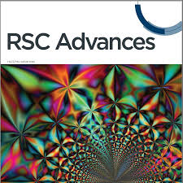 -
Synthesis, structural characterization and DFT study of a cobalt(III)/cobalt(II) complex derived from N,O donor reduced Schiff base ligand, Inorganica Chimica Acta, 2025, 581, 122618.
doi.org/10.1016/j.ica.2025.122618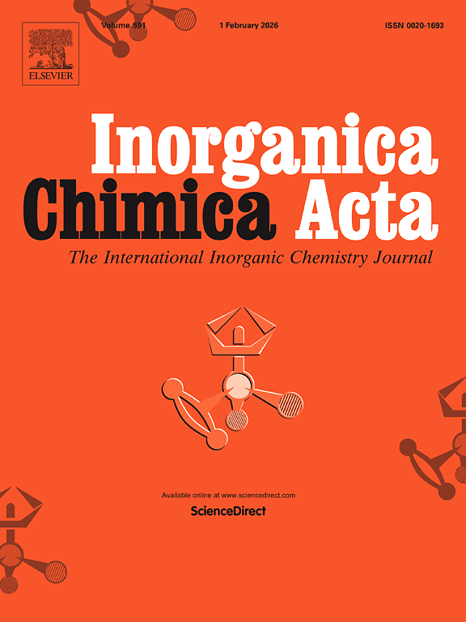 -
Distinguishing between Coordination and Spodium Bonds in the Dinuclear Cadmium(II) Complex of Lawesson’s-Derived Phosphonodithioates, Crystal Growth & Design, 2025, 25, 4, 912–923.
doi.org/10.1021/acs.cgd.4c01027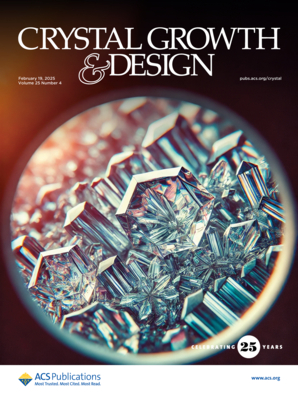 -
Derivative of clove oil used as a chemosensor for the colorimetric and fluorometric detection of Al3+: crystal structure description and live cell imaging, New Journal of Chemistry, 2025.
doi.org/10.1039/D4NJ04724A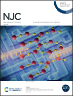 -
Application of a distinctly bent, trinuclear, end-to-end azide bridged, mixed valence cobalt(iii/ii/iii) complex in the fabrication of photosensitive Schottky barrier diodes, RSC Advances, 2024.
doi.org/10.1039/D4RA01406E -
Importance of π-π interactions in the solid state structures of two cobalt complexes derived from N,O donor reduced Schiff base ligands, Polyhedron, 2024, 254, 116916.
doi.org/10.1016/j.poly.2024.116916
-
Fabrication of Schottky barrier diodes utilizing carboxylate bridged trinuclear mixed valence cobalt(III/II/III) complexes of tetradentate N2O2 donor reduced Schiff base ligands, New Journal of Chemistry, 2023, 47, 14202–14216.
doi.org/10.1039/D3NJ01829F
-
An insight into the non-covalent interactions in the solid state structures of dinuclear cobalt(II) complexes with N,O-donor ligands: Application of the complexes in the fabrication of Schottky devices, CrystEngComm, 2023.
doi.org/10.1039/D2CE01282K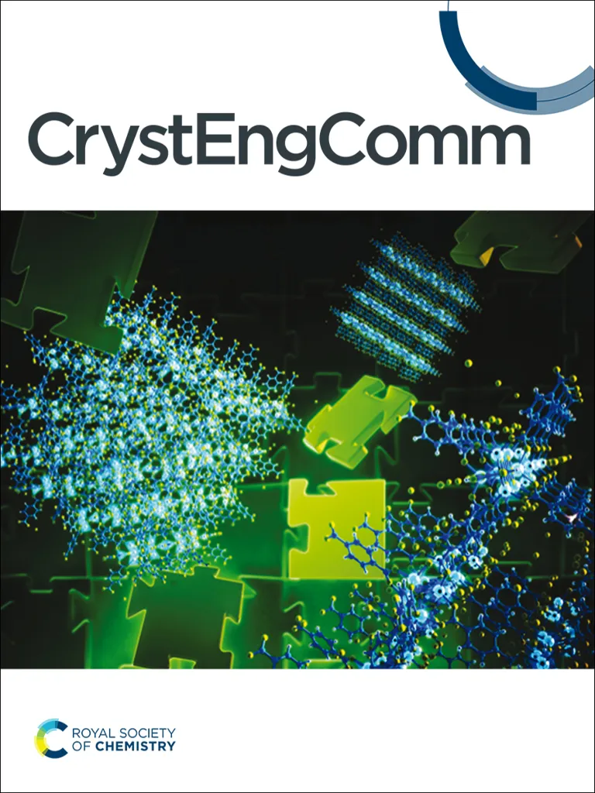 -
Combined Experimental and Theoretical Studies on the Rubbing-Induced Fluorescence Behavior of a Luminophore in the Solid State, ACS Omega, 2023, 8, 1, 373–379.
doi.org/10.1021/acsomega.2c04803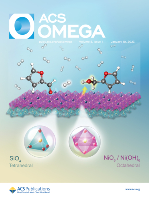 -
Rhodamine-azo based two fluorescent probes for recognition of trivalent metal ions: crystal structures elucidation and biological application, Dalton Transactions, 2022.
doi.org/10.1039/D2DT00399F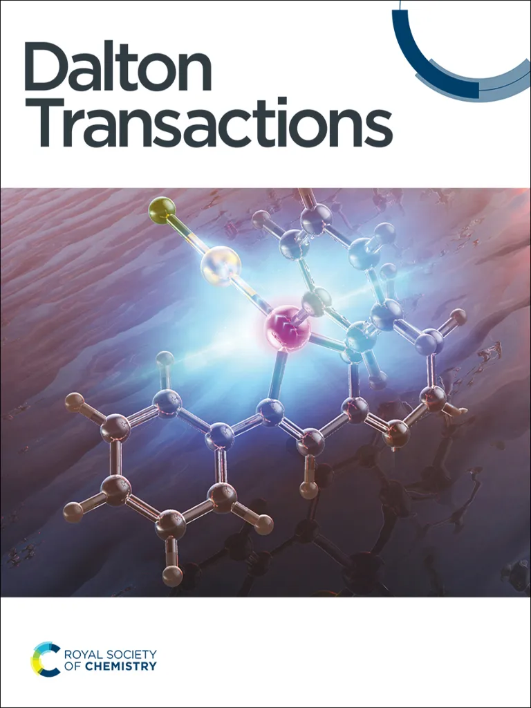 -
Synthesis and characterization of two polynuclear zinc(II) complexes and their applications in nitroaromatics sensing: An experimental and theoretical study, Inorganica Chimica Acta, 2022, 543, 121186.
doi.org/10.1016/j.ica.2022.121186 -
Synthesis, characterization and self assembly of dinuclear zinc Schiff base complexes: A combined experimental and theoretical study, Polyhedron, 2022, 225, 116044.
doi.org/10.1016/j.poly.2022.116044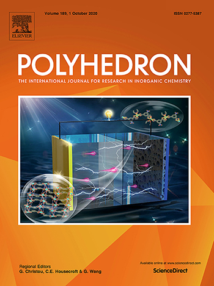 -
A mononuclear zinc complex with a diamine: Synthesis, characterization, self assembly, luminescence property and DFT calculations, Journal of Molecular Structure, 2022, 131598.
doi.org/10.1016/j.molstruc.2021.131598
-
Role of non-covalent interactions in the supramolecular architectures of mercury(II) diphenyldithiophosphates: An experimental and theoretical investigation, New Journal of Chemistry, 2021, 45, 2249-2263.
doi.org/10.1039/D0NJ05709F -
Phenoxo-bridged dinuclear mixed valence cobalt(III/II) complexes with reduced Schiff base ligands: Synthesis, characterization, band gap measurement and fabrication of Schottky barrier diodes, Dalton Transactions, 2021.
doi.org/10.1039/D0DT03707A -
An insight into the interaction between α-ketoamide- based inhibitor and CORONAVIRUS MAIN PROTEASE: A detailed in silico study, Biophysical Chemistry, 2021, 269, 106510.
doi.org/10.1016/j.bpc.2020.106510
-
Field-Induced Single Molecule Magnet Behavior in a Dinuclear Cobalt(II) Complex: A Combined Experimental and Theoretical Study, Dalton Transactions, 2020, 49, 16778-16790.
doi.org/10.1039/D0DT02158J -
Understanding a Thermoemissive ESIPT-Based SolidState Off–On Switch as a Dual-Channel Chemosensor in Solid and Solution Phases: Detailed Experimental and Theoretical Study, Journal of Physical Chemistry C, 2020, 124, 33, 18181–18193.
doi.org/10.1021/acs.jpcc.0c04603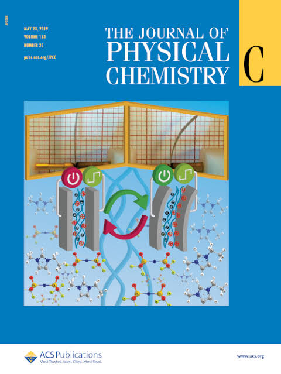 -
Synthesis, characterization, self-assembly and non-ohmic Schottky barrier diode behaviors of two iron(iii) based semiconductors with theoretical insight, CrystEngComm, 2020, 22, 5170-5181.
doi.org/10.1039/D0CE00223B -
Effect of Main Versus Ancillary Ligand Substitution on the Photophysical Properties of a Series of Ir(III) Complexes: A Detailed Theoretical Investigation, Journal of Physical Chemistry A, 2020, 124, 23, 4654–4665.
doi.org/10.1021/acs.jpca.0c03102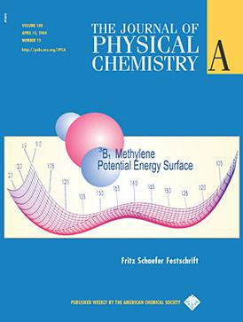 -
Biocompatible Aliphatic Terpolymers via In Situ Fluorescent Monomers for Three-in-One Applications: Polymerization of Hydrophobic Monomers in Water, Langmuir, 2020, 36, 22, 6178–6187.
doi.org/10.1021/acs.langmuir.0c00636
-
A theoretical insight on the rigid hydrogen-bonded network in the solid state structure of two zinc(II) complexes and their strong fluorescence behaviors, CrystEngComm, 2020, 22, 3005-3019.
doi.org/10.1039/D0CE00125B -
Light-Emitting Multifunctional Maleic Acid-co-2-(N(hydroxymethyl)acrylamido)succinic Acid-co-N-(hydroxymethyl)acrylamide for Fe(III) Sensing, Removal, and Cell Imaging, ACS Omega, 2020, 5, 7, 3333–3345.
doi.org/10.1021/acsomega.9b03536 -
Fluorescent Guar Gum-g-Terpolymer via In Situ Acrylamido-Acid Fluorophore-Monomer in Cell Imaging, Pb(II) Sensor, and Security Ink, ACS Applied Bio Materials, 2020, 3, 4, 1995–2006.
doi.org/10.1021/acsabm.9b01146
-
Fluorescent Terpolymers Using Two Non-Emissive Monomers for Cr(III) Sensors, Removal, and Bio-Imaging, ACS Biomaterials Science & Engineering, 2020, 6, 3, 1397–1407.
doi.org/10.1021/acsbiomaterials.9b01849
-
Magnetic Properties of End-to-End Azide-Bridged Tetranuclear Mixed-Valence Cobalt(III)/Cobalt(II) Complexes with Reduced Schiff Base Blocking Ligands and DFT Study, ACS Omega, 2019, 4, 24, 20634–20643.
doi.org/10.1021/acsomega.9b02764 -
An insight into the non-covalent Pb-S and S-S interactions in the solid-state structure of a hemidirected lead(II) complex, CrystEngComm, 2020, 22, 237-247.
doi.org/10.1039/C9CE01548E -
DFT study on the redox behavior of two dioxovanadium(v) complexes with N2O donor Schiff base ligands and their use in catalytic oxidation of ortho-aminophenol, New Journal of Chemistry, 2019, 43, 18747-18759.
doi.org/10.1039/C9NJ04672K -
Multi‐C−C/C−N‐Coupled Light‐Emitting Aliphatic Terpolymers: N−H‐Functionalized Fluorophore Monomers and HighPerformance Applications, Chemistry—A European Journal, 2020, 26, 502.
doi.org/10.1002/chem.201903935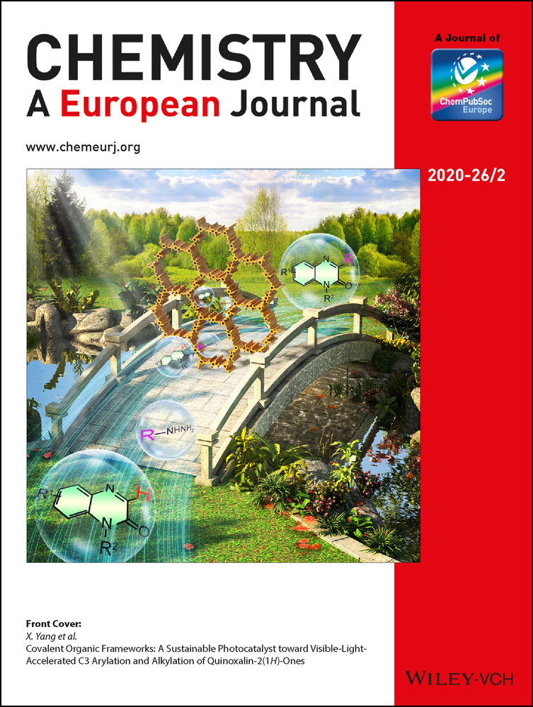 -
Relative stability of cis and trans isomers of octahedral cobalt(III) complexes of the type [Co(N2O2)X2] with tetradentate salen type Schiff bases: A combined theoretical and experimental study, CrystEngComm, 2019, 21, 6026-6037.
doi.org/10.1039/C9CE00922A -
Synthesis, structure, DFT study and catechol oxidase activity of Cu(II) complex with sterically constrained phenol based ligand, Journal of Molecular Structure, 2019, 1193, 265-273.
doi.org/10.1016/j.molstruc.2019.05.021
-
Fluorescent Terpolymers via In Situ Allocation of Aliphatic Fluorophore Monomers: Fe(III) Sensor, High‐Performance Removals, and Bioimaging, Advanced Healthcare Materials, 2019, 8, 1900980.
doi.org/10.1002/adhm.201900980
-
Quantum chemical predictions of aqueous pKa values for OH groups of some α–hydroxycarboxylic acids based on ab-initio and DFT calculations, Computational and Theoretical Chemistry, 2017, 1125, 29-38.
doi.org/10.1016/j.comptc.2017.12.011
-
A mixed phenoxo and end-on azide bridged dinuclear copper (II) Schiff base complex: synthesis, structure, magnetic characterization and DFT study, New Journal of Chemistry, 2018, 42, 13512-13519.
doi.org/10.1039/C8NJ02612B
-
Understanding the difference in photophysical properties of cyclometalated iridium (iii) and rhodium (iii) complexes by detailed time-dependent density functional theory and frontier molecular orbital supports, Journal of Physical Chemistry C, 2017, 121, 21, 11632–11642.
doi.org/10.1021/acs.jpcc.7b01573
-
Understanding the ring-opening, chelation and non-chelation reactions between nedaplatin and thiosulfate: a DFT study based on NBO, ETS-NOCV and QTAIM, Theoretical Chemistry Accounts, 2016, 135, 30.
doi.org/10.1007/s00214-015-1772-x
-
Synthesis, characterization, interactions with DNA and bovine serum albumin (BSA), and antibacterial activity of cyclometalated iridium(III) complexes containing dithiocarbamate derivatives, Journal of Coordination Chemistry, 2014, 67, 2643-2660.
doi.org/10.1080/00958972.2014.945924
-
Efficient and Convenient Methods for Synthesis of Some Phthalazine Derivatives and Their Evaluation of Cytotoxicity, Synthetic Communications, 2014, 44, 847-857.
doi.org/10.1080/00397911.2013.837486
-
Cyclometalated rhodium(III) complexes bearing dithiocarbamate derivative: Synthesis, characterization, interaction with DNA and biological study, Polyhedron, 2014, 69, 127-134.
doi.org/10.1016/j.poly.2013.11.028
-
A napthelene–pyrazol conjugate: Al(iii) ion-selective blue shifting chemosensor applicable as biomarker in aqueous solution, Analyst, 2014, 139, 4828-4835.
doi.org/10.1039/C4AN01039F
-
Substituent effect on fluorescence signaling of the cell permeable HSO4− receptors through single point to ratiometric response in green solvent, RSC Advances, 2014, 4, 27665-27673.
doi.org/10.1039/C4RA03551H
-
Interactions of the aquated forms of the anticancer drug AMD443 with DNA purine bases: A detailed computational approach, Inorganica Chimica Acta, 2013, 400, 156-164.
doi.org/10.1016/j.ica.2013.01.033
-
An oxorhenium(V) Schiff-base complex: synthesis, structure, spectroscopic characterization, electrochemistry, and DFT calculations, Journal of Coordination Chemistry, 2013, 66, 7, 1143-1154.
doi.org/10.1080/00958972.2013.777955
Full publication list available on Google Scholar.